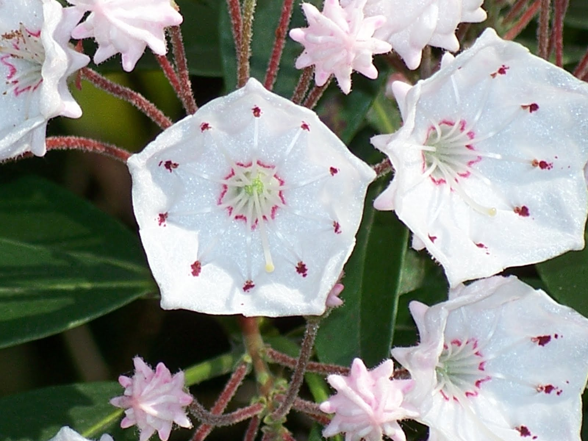
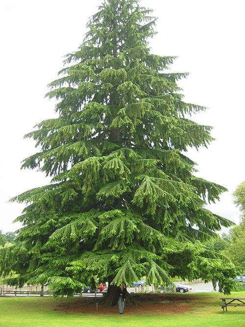

One of the original 13 colonies, Pennsylvania was founded by William Penn as a haven for his fellow Quakers. Pennsylvania’s capital, Philadelphia, was the site of the first and second Continental Congresses in 1774 and 1775, the latter of which produced the Declaration of Independence, sparking the American Revolution. After the war, Pennsylvania became the second state, after Delaware, to ratify the U.S. Constitution. In the American Civil War (1861-1865), Pennsylvania was the site of the Battle of Gettysburg in which Union General George Meade defeated Confederate General Robert E. Lee, bringing an end to the Confederacy’s Northern invasion, as well as Lincoln’s famous Gettysburg Address. Tourists are drawn to Pennsylvania by its monuments to America’s revolutionary history, including Independence Hall and the Liberty Bell. Famous Pennsylvanians include patriot and inventor Benjamin Franklin, frontiersman Daniel Boone, painter Mary Cassatt and inventor Robert Fulton.
| Date of Statehood | Capital | Population | Size |
|---|---|---|---|
| December 12, 1787 | Harrisburg | 13.01 million | 46,055 square miles |
Virtue, Liberty and Independence
Mountain Laurel
Ruffed Grouse
Hemlock
Interesting facts